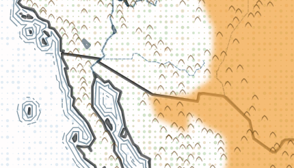
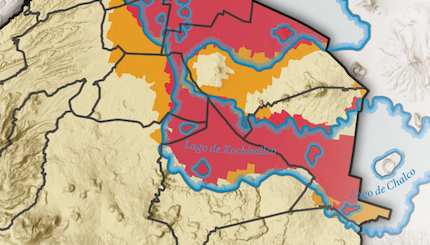
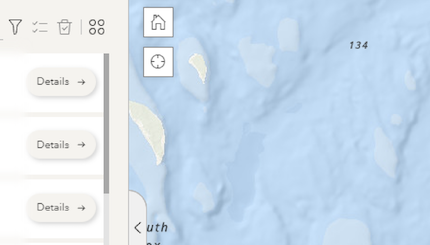
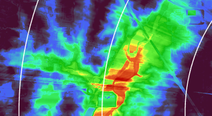

Bison Range Timeline
R Shiny/GIF Map
QGIS, R Studio, Leaflet, Affinity Designer 2

CDMX Sísmos
Static Map, Data Visualization
QGIS, R Studio, Affinity Designer 2

AGL Project Sites
Static Map
ArcGIS Pro

Illinois Waterways
Static Map
QGIS

Spring Peak Bird Migration
Static Map
ArcGIS Pro

Marsh Bird Data Hub
Website
ArcGIS Hub, ArcGIS Pro, ArcGIS Experience Builder, ArcGIS Dashboards, Survey123

Race & Toxic Air Pollution in NW Indiana
Static Map
ArcGIS Pro, Adobe Illustrator

Calumet Indiana Marsh Bird Observations
Data Visualization
R Studio

Colonial Nesting Waterbirds in NW Indiana
Story Map
ArcGIS StoryMaps, ArcGIS Online

Bike Rides
Web Map
ArcGIS Experience Builder, ArcGIS Online, ArcGIS Field Maps

Project Mapper
GIS Web App
ArcGIS Experience Builder, ArcGIS Online, Survey123

Motus Range & Viewshed Analysis
Static Map
ArcGIS Pro